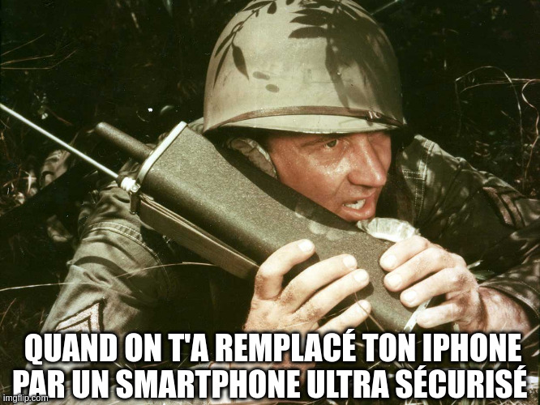

Challenge #441
broadcastopol
Le théâtre géopolitique s’est dégradé pour nous dernièrement. Un de nos alliés semble
avoir modifié des équipements de communication que nous lui avons fourni initialement.
En effet, depuis quelques jours nos échanges sont interrompus. En revanche, un de nos
agents sur le terrain a intercepté une de leurs diffusions (flag.wav.enc).
D’après nos renseignements, elle est d’importance tactique.
Un de nos cryptographes nous a indiqué que l’algorithme de chiffrement est utilisé dans
un mode de stream cipher classique et que nous savons que les données en clair sont des
fichiers WAV. Son équipe a également réussi à obtenir un clair connu
(known.wav/known.wav.enc) pour lequel nous avons
connaissance de ces éléments :
- IV = 0x000dcf18 ;
- eck = 0x1119EB502F815EB502F8 (eck, Encryption Cipher Key).
Par ailleurs, pour le message chiffré flag.wav.enc intercepté, les analyses
opérationnelles indiquent que la valeur de l’IV devrait être 0x0026b328.
Note : le flag est au format FCSC{contenu_diffusion}. Le
contenu est en anglais. Sa retranscription dans le flag est en minuscules et entre
chaque mot il y a un _. Exemple : si j’entends *“You made good today”*, le
flag est : FCSC{you_made_good_today}.

Fichiers à étudier
- flag.wav.enc
- known.wav
- known.wav.enc